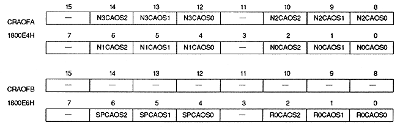

Color RAM address offset bit : Color RAM address offset bit
| N0CAOS2 to N0CAOS0 | 1800E4H | Bits 2 to 0 | NBG0 (Or RBG1) |
| N1CAOS2 to N1CAOS0 | 1800E4H | bits 6 to 4 | For NBG1 (or EXBG) |
| N2CAOS2 to N2CAOS0 | 1800E4H | Bits 10 to 8 | For NBG2 |
| N3CAOS2 to N3CAOS0 | 1800E4H | Bits 14 to 12 | For NBG3 |
| R0CAOS2 to R0CAOS0 | 1800E6H | Bits 2 to 0 | For RBG0 |
| SPCAOS2 to SPCAOS0 | 1800E6H | bits 6 to 4 | For sprites |
The actual color RAM address offset value is calculated using the following formula. When the color RAM mode is mode 0 or mode 2, the most significant bit of the color RAM address resulting from adding the color RAM address offset value is ignored.
-When color RAM mode is mode 0 or mode 1 (Color RAM address offset value) * = (Color RAM address offset register value 3 bits) x 200HWhen color RAM mode is mode 2 (Color RAM address offset value) * = (Color RAM address offset register value 3 bits) x 400H